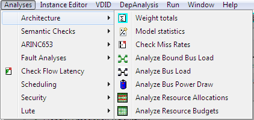
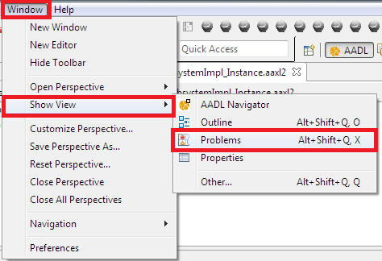

The analysis plugins designed by the SEI are available in the Analyses, as shown in the picture below. These plugins mostly act on the instance model and thus you need to select the instance model and the root system instance when invoking these plugins.
Most of the plugins report errors and information as reports in a reports folder in your workspace as well as Eclipse Markers shown in the Eclipse Problems view. You can activate the Problems view by selecting the following menus: Window, Show View and then Problems, as shown in the following picture.
Eclipse classifies Marker information into different categories: errors, warning and information. By default the Eclipse problem view only shows errors, so you may not see the results of an analysis if no errors are involved.
You can change the default setting by following the instructions at Eclipse Basics.
One development scenario is that subcontractors develop their subsystems independently and each subcontractor documents how the data it communicates via an ARINC429 protocol is packaged into ARINC429 words. As a result there can be inconsistencies in terms of which package ID and which bit locations data is transferred in. It is then the responsibility of the integrator to detect any inconsistencies.
We can support such consistency checking of ARINC429 protocol usage by making use of properties on ports or on features of port group types. The data communicated through ports are mapped into ARINC429 words using the following properties:
The ARINC429 consistency checker is invoked on an instance model using the toolbar button or via the Analyses menu. It works with all port connection instances and compares the three ARINC429 property values, if both the source and destination ports have them. The checker also records all port connection instances and their ARINC429 properties in a CSV file for processing by MS Excel or other tools.
Note that the numberbits property is redundant with the Source_Data_Size property. We chose to provide the numberbits property as separate property in order to support a development process where a team member, who is responsible for the mapping to the ARINC429 protocol, can work independently. We can extend the consistency checker to ensure that the numberbits property and the Source_Data_Size property have consistent values, or the Source_Data_Size property is used when the numberbits property value is not present.
For every port connection instance the checker retrieves properties from the source port and the destination port and compares them. Port connection instances are always created between port instances of the lowest level component instances in the instance model. This means that for a model with processes or systems as the lowest components the connection instances start with and end with process or system ports. When the model is refined to the thread level the port connection instances are created between thread instance ports.
When feature groups are defined and they contain ports, then the instance contains a separate port connection instance for each port. In other words, the port connection checker validates the consistency for each port in the feature group.
The following properties are currently compared:
These properties are associated with the ports, with data component types that are the port classifiers, or with the port features of feature group types.
If a property value is missing for one or both ports no comparison is made and a message is reported.
For all port connection instances the source and destination port property values are recorded in a CSV file for processing by MS Excel. The resulting file can be found in the reports folder.
The Weight Analysis sums up the weight of different components in terms of net and gross weight and compares the results against specified weight limits. For details see here.
The Weight Analysis sums up the weight of different components in terms of net and gross weight and compares the results against specified weight limits. For details see here.
The Budget Analysis sums up the budgets of components with resource demand and compares the total against the resource capacity - in case of bindings the budgets of those components bound to the resource. For details see here.